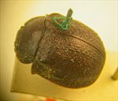
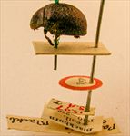
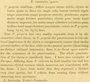
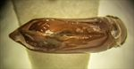

Click on images to enlarge
.jpg){kind=link}

Fig. 1 Paropsis cribrata type specimen
.jpg){kind=link}

Fig. 2. Paropsis cribrata type specimen and labels
{kind=link}

Fig. 3. Paropsis cribrata, description
.jpg){kind=link}

Fig. 4. Paropsis cribrata, aedeagus (not from type specimen, but likely from type series)
Name
Paropsis cribrata Blackburn, 1896
Corresponds to
This species is the same as Ta78.
Diagnosis and Notes
Blackburn (1896) deals with P. cribrata as part of his 'subgroup ii' (i.e., those species without "strongly marked characters", whose greatest height is not or scarcely in front of the middle of the elytral margin and whose elytra are depressed under the humeral callus). Within that group, in his key to the species, he characterises it as:
A. Inner edge of humeral callus distinctly nearer to lateral margin of elytra than to suture;
BB. Sides of prothorax not at all explanate;
C. Elytra not having a well defined transverse wheal-like ridge;
DD. Form less wide [than T. mediocris]; elytra not wider than long [i.e., form is not nearly circular];
E. Prothorax with somewhat evenly rounded sides; only moderately narrower in front than at base;
FF. Puncturation of elytra exceptionally fine and close;
G. Submarginal part of elytra very distinct near apex.
This is one of a group of relatively large species (the alta-group) found in the mallee regions of southern Australia. It is very similar to T. propria, another member of the group. It has been incorrectly considered a synonym of T. spilota (Chapuis), see "Type Specimen" below for a discussion of this issue. T. cribrata is almost certainly the same species as Ta78, by comparison of external and aedeagus morphology.
Type specimen
Location: BMNH
Label data: /“Type” (red-bordered circle)/ “1297 S.A. T”/ “Blackburn coll. 1910-236.”/ “Paropsis cribrata Blackb.”/
Male; Size: 9.75 (L) x 7.7 ( W) x 4.55 (H) mm; A-A: 1.62 mm; HCE/BL = 20.2% (estimated from photo of lateral aspect). This is one of the large, strongly rounded Trachymela of the alta-group, most of which are found on mallee eucalypts. It has longitudinal series of small verrucae on the elytra.
There is a second specimen (Labels:/ “comp. w. type”/ “Jacoby coll. 1909-28a”/ “Yorkton”[?]/ “spilota Chap”/. Body length: 9.7 mm) in the same unit tray as the holotype. This specimen seems to have been compared with the Paropsis spilota Chapuis holotype by Jacoby. Its aedeagus (Figure 4) has been dissected out at some time in the past. The aedeagus has dimensions of LPE: 3.7 mm, HPE: 1.75 mm. This specimen is almost certainly another specimen of cribrata - it is very similar to the holotype in appearance and may even be from the same locality as the holotype (Blackburn gives York Peninsula as his type locality). It is however definitely not the same as Chapuis' spilota! Even though the body shapes are roughly similar, the arrangement and type of verrucae are very different. Hence the synonymy of these two species by Bryant (1923) is invalid.
Original description
Translation of original description (Figure 3) by ChatGPT, 03/2026:
Very similar to P. propria; it differs in having the body less shiny, the elytra at the sides scarcely more reddish than on the disc, their black warts more numerous and more distinctly arranged in rows; the pronotum much more strongly and roughly punctured; the elytra behind the base not distinctly impressed, these much more finely punctured (not much more strongly toward the sides than on the disc); the rest as in P. propria. Length 4½–4⅘ lines [~9.5-10.2 mm]; width 3½–3⅗ lines [~7.4-7.6 mm].
References
Bryant, G.E. 1923, "VIII. Notes on synonymy in the Phytophaga (Coleoptera)", Annals and Magazine of Natural History, 12:67, 130-147 (page 139).
Blackburn, T. 1896, "Revision of the genus Paropsis. Part I", Proceedings of the Linnean Society of New South Wales, vol. 21, no. 4, 637-693 (page 670).
Copyright © 2026. All rights reserved.